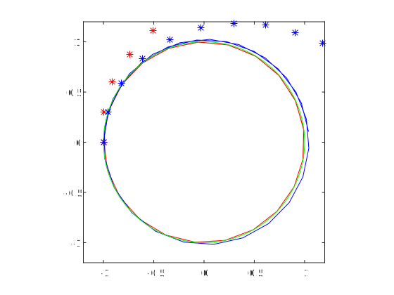
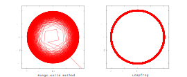
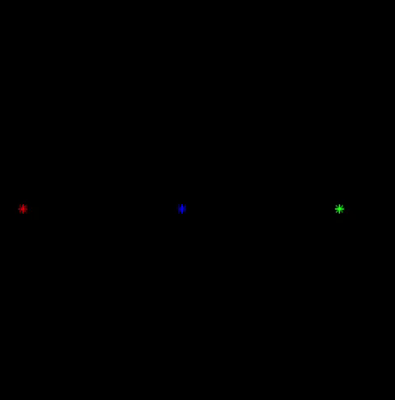
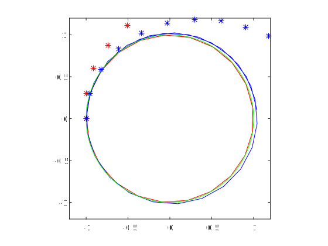
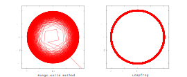
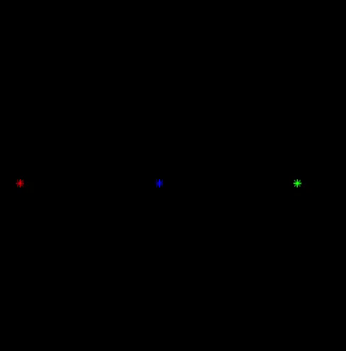

Some messing around with n-body simulations (very casual) 1/16/19

Full size. The initial conditions were:
The accuracy of each method can be tested against the simple case of a mass orbiting another, stationary, mass.
 Full size. Key: green - correct orbit (circle); red - Runge Kutta; blue - leapfrog; blue* - midpoint; red* - Euler.
Initial conditions were $r=(-1,0,0),v=(0,1,0).$ Iterated over a time of 10 seconds with timestep 0.3 seconds. Here it's clear that the Runge-Kutta method has the least error. However, the leapfrog method has the advantage of remaining in a stable orbit, whereas the Runge-Kutta method tends to decay: 
Full size. Initial conditions: same as above. Iterated over a time of 10000 seconds with timestep 0.3 seconds.
An obvious next step is to look for some nicely periodic, bounded systems. Here is one I stumbled upon:
Initial conditions: $r_a=(0,0,0), v_a = (0,-1.5,0), r_b = (0.5,0,0), v_b = (0, 1.5, 0), r_c = (1,0,0), v_c=(0,0,0)$
Animation:

I am not sure if the exact configuration remains periodic in the long term, because the simulations show that it explodes eventually:

(Calculated with the leapfrog method for timestep 0.001 and total time 100, with initial conditions as specified above.)
Program
Using MATLAB, I wrote a simple equal mass 3-body system simulation. There are several options for the method of integration, I tried out these four: (Let $a(r)$ be the acceleration of the body when it has the position vector $r$, and $a,v,$ and $r$ are all vectors and $h$ is the time step)- Euler's method: $k = a(r_i), $$v_{i+1} = v_i + kh, $$r_{i+1} = r + v_i h.$
- Implicit midpoint method: $k = a(r_i), v_{i+1} = v_i + kh,$$r_{i+1} = r + \frac{1}{2}(v_i+v_{i+1})h$
- Leapfrog method (Verlet velocity method): $k_1 = a(r_i), $$r_{i+1} = r_i + v_i h + \frac{1}{2}k_1 h^2, $$k_2 = a(r_{i+1}),$$ v_{i+1}=v_i+\frac{1}{2}(k_1+k_2)h$
- 4th-order Runge Kutta method: $k_{v1} = a(r_i),\quad$$k_{r1}=v_i,\quad$$k_{v2} = a(r_i+\frac{1}{2}k_{r1}h),\quad$$k_{r2}=v_i+\frac{1}{2}k_{v1}h,\quad$$k_{v3} = a(r_i + \frac{1}{2}k_{r2}h),\quad$$k_{r3} = v_i + \frac{1}{2}k_{v2}h,\quad$$k_{v4} = a(r_i + k_{r3}h),\quad$$k_{r4} = v_i + k_{v3}h,\quad$$v_{i+1} = v_i + \frac{1}{6}(k_{v1}+2k_{v2}+2k_{v3}+k_{v4})h,\quad$$r_{i+1} = r_i + \frac{1}{6}(k_{r1}+2k_{r2}+2k_{r3}+k_{r4})h.$
Full size. The initial conditions were:
- red: $r=(0,0,0),v=(0,-1,0)$
- green: $r=(1,0,0),v=(0,0,0)$
- blue: $r=(0.5,0,0),v=(0,1,0)$
The accuracy of each method can be tested against the simple case of a mass orbiting another, stationary, mass.
 Full size. Key: green - correct orbit (circle); red - Runge Kutta; blue - leapfrog; blue* - midpoint; red* - Euler.
{kind=link}
Initial conditions were $r=(-1,0,0),v=(0,1,0).$ Iterated over a time of 10 seconds with timestep 0.3 seconds. Here it's clear that the Runge-Kutta method has the least error. However, the leapfrog method has the advantage of remaining in a stable orbit, whereas the Runge-Kutta method tends to decay: 
Full size. Initial conditions: same as above. Iterated over a time of 10000 seconds with timestep 0.3 seconds.
{kind=link}
An obvious next step is to look for some nicely periodic, bounded systems. Here is one I stumbled upon:
Initial conditions: $r_a=(0,0,0), v_a = (0,-1.5,0), r_b = (0.5,0,0), v_b = (0, 1.5, 0), r_c = (1,0,0), v_c=(0,0,0)$
Animation:

I am not sure if the exact configuration remains periodic in the long term, because the simulations show that it explodes eventually:
(Calculated with the leapfrog method for timestep 0.001 and total time 100, with initial conditions as specified above.)